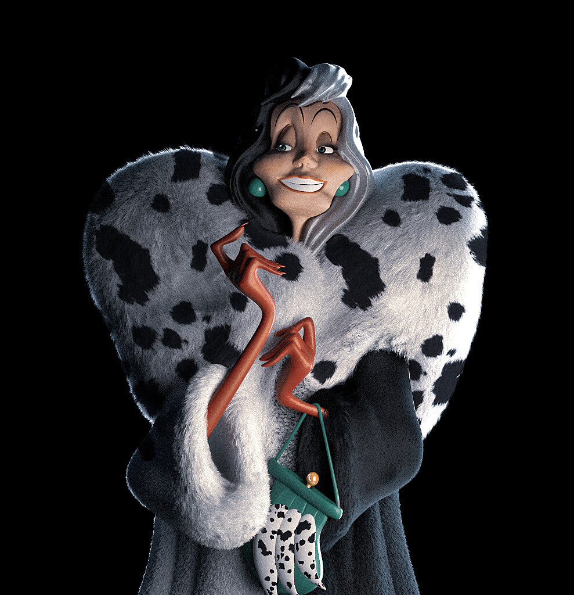
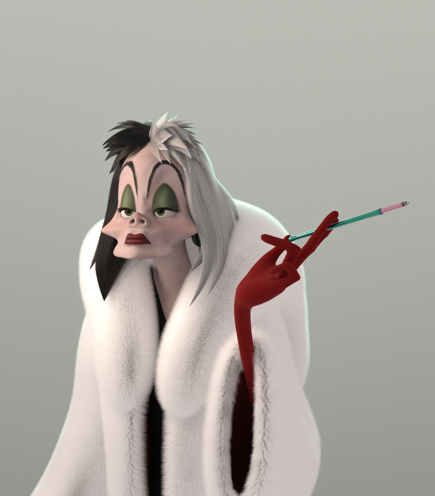
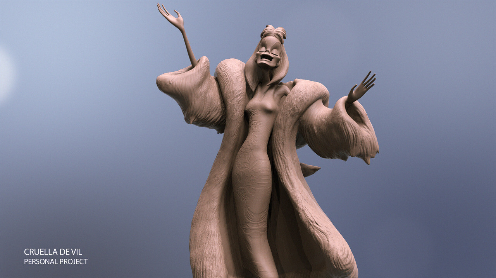

Bienvenidos a mi rincón.
Soy María Ángeles Ruiz de Alarcón. Una señora de familia acomodada que ahora vive en un barrio... popular...
Mi Vida
La vida me ha llevado a este lugar, lleno de simplicidad y riqueza cotidiana. Aquí compartiré mis experiencias y reflexiones sobre este nuevo capítulo. Acompáñenme en este viaje de descubrimientos.
Lolo
Su UNICO Y FIEL compañero era un galgo de pelo largo llamado Lolo o Lolito (como yo le llamo). Este elegante perro, con su pelaje suave y ojos comprensivos, era su confidente y protector. Cada mañana, paseaban juntos por el parque, donde Lolo corría con gracia mientras María Ángeles lo observaba con orgullo y nostalgia, encontrando en él la verdadera riqueza de su nueva vida sencilla..
Vicios
Alejada de los lujos de su juventud. Su único vicio era su colección de abrigos de piel, que conservaba como un vestigio de su pasado opulento. Aunque su nuevo entorno no ofrecía la misma majestuosidad, envolverse en uno de esos abrigos le recordaba los tiempos dorados. Paseaba por el barrio impecablemente vestida, encontrando en sus abrigos de piel un reconfortante eco de la elegancia que una vez conoció.
MIS ACTIVIDADES FAVORITAS
Mis días comienzan temprano con una caminata por las calles empedradas, donde saludo a mis vecinos y disfruto del bullicio del mercado local. A pesar de mi situación, prefiero hacer mis compras diarias en las tiendas del barrio, conversando con los tenderos y seleccionando personalmente los ingredientes frescos para mis comidas. Por las tardes, me dedico al voluntariado, ofreciendo mi tiempo y recursos para mejorar la vida de los residentes.
·Selecciona TU actividad favorita
Enviadme TUS actividades favoritas (solo por cotillear)
¿Que días del Podcastes, te agendas cada semana?
Agenda semanal de mi Podcast!
